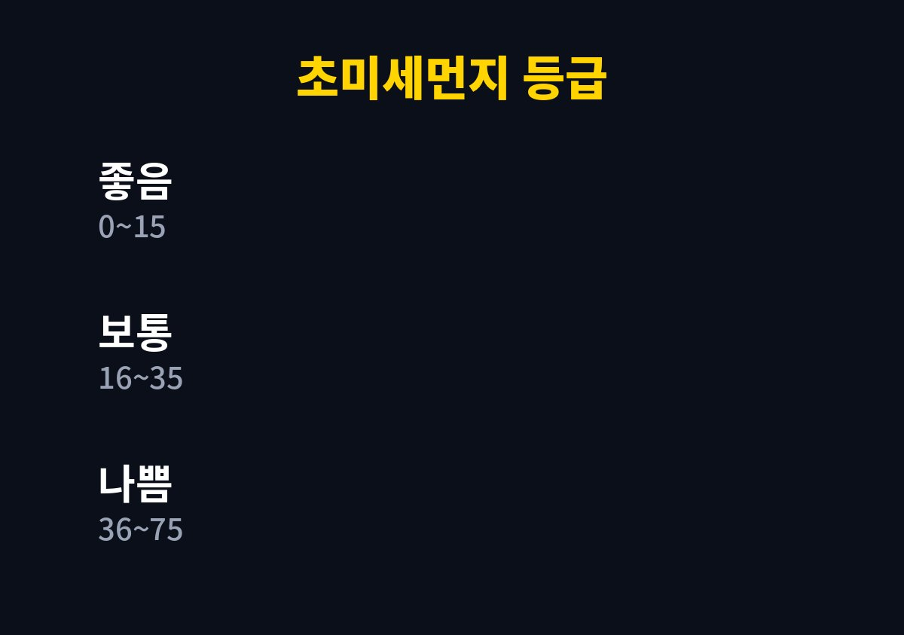
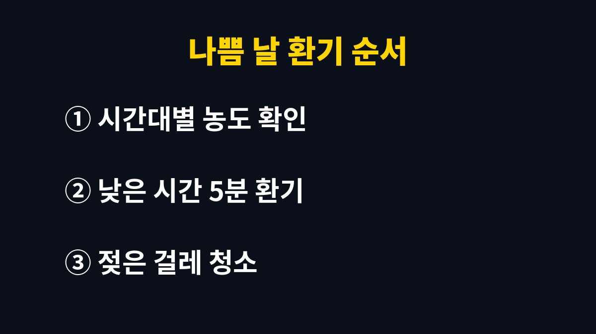

미세먼지 환기는 '나쁨'인 날에도 완전히 끊지 않고, 창문을 짧게 열어 실내 공기를 한 번 바꿔 주는 쪽이 맞다.
초미세먼지(PM2.5)가 36㎍/㎥ 이상이면 나쁨 등급이지만, 닫아 둔 집 안에도 요리 연기와 난방, 사람이 내뿜는 이산화탄소가 쌓인다.
2026년 11월 기준 에어코리아 등급 기준에 맞춰 날마다 환기를 정하는 방법을 정리했다.
미세먼지가 나쁘다는 알림을 받으면 창문부터 닫는 사람이 많다.
그런데 집 안 공기는 바깥만 따라 움직이지 않는다.
가스레인지로 생선을 구운 날이나 가족이 모두 집에 있던 주말 저녁에는 실내가 바깥보다 더 탁해지기도 한다.
그래서 바깥 농도가 높은 날에도 하루 한두 번은 짧게 공기를 바꿔 주는 편이 낫다.
에어코리아 앱이나 누리집에서 시간대별 농도를 보면 같은 날에도 오르내림이 있다.
보통 차량이 몰리는 출퇴근 시간대는 높고, 오후 중간에 잠깐 내려가는 날이 많다.
나는 그 시간대를 골라 5~10분만 열어 두는 쪽으로 정했다.
다만 이 시간은 내 생활권에서 본 경향일 뿐이어서, 사는 지역의 시간대별 그래프를 직접 보고 정하는 것이 정확하다.
예를 들어 아침 출근 전에 창문을 활짝 열어 둔 채 집을 비우는 일은 나쁨 날에 가장 피하고 싶은 방식이다.
열어 둔 시간이 길수록 바깥 먼지가 집 안 바닥과 침구에 그대로 쌓이기 때문이다.
환기는 짧게 하고 창문을 닫은 뒤 자리를 떠나는 것이 원칙이다.
에어코리아가 안내하는 초미세먼지 등급은 좋음 0~15, 보통 16~35, 나쁨 36~75, 매우 나쁨 76㎍/㎥ 이상이다.
미세먼지(PM10)는 좋음 0~30, 보통 31~80, 나쁨 81~150, 매우 나쁨 151㎍/㎥ 이상으로 나뉜다.
아래 표의 환기 방식은 이 등급에 내가 실제로 맞춰 쓰는 기준이다.
| 초미세먼지 등급 | 농도(㎍/㎥) | 환기 방식 |
|---|---|---|
| 좋음·보통 | 0~35 | 맞바람으로 10분 안팎 환기 |
| 나쁨 | 36~75 | 농도 낮은 시간에 5분 안팎, 한 곳만 |
| 매우 나쁨 | 76 이상 | 창문 환기는 미루고 요리 때만 후드 사용 |
표의 숫자는 법적 기준이 아니라 내가 생활하면서 정한 방식이어서, 집 구조와 창문 방향에 따라 달라질 수 있다.
창이 한쪽에만 있는 집은 맞바람이 안 통하므로 시간을 조금 더 길게 잡아도 된다.


공기청정기는 먼지를 거르지만 이산화탄소와 요리 냄새 같은 가스는 줄이지 못하는 제품이 많다.
나도 필터만 믿고 며칠을 닫아 두었다가 아침마다 머리가 무거운 것을 겪고 환기 습관을 되찾았다.
바닥에 가라앉은 먼지를 먼저 털어 내면 다시 공중으로 올라간다.
젖은 걸레로 닦는 방식이 먼지를 덜 날린다.
천식이나 비염이 있는 가족이 있다면 이 순서가 더 중요하다.
어린이와 노인, 호흡기 질환이 있는 사람은 미세먼지 영향을 더 받는 민감군으로 분류된다.
이런 가족이 있다면 나쁨 이상인 날 외출 시간을 줄이고, 기침이나 숨참이 계속되면 병원에서 진료를 받는 것이 안전하다.
내일 아침에는 휴대폰에서 에어코리아 앱을 열고, 우리 동네 오후 시간대 초미세먼지 예보부터 확인해 본다.
농도가 낮은 시간이 보이면 그때 5분만 창문을 열어도 하루 공기는 달라진다.
참고 자료: 에어코리아(한국환경공단) 「대기환경지수·등급 기준과 행동요령」(2026년 11월 확인) · 식품의약품안전처 「보건용 마스크 허가 안내」(2026년 11월 확인)
※ 2026년 기준 공식 기준을 바탕으로 정리한 일반 건강 정보이며, 증상이 계속되거나 지병이 있다면 전문의와 상담하길 바란다.